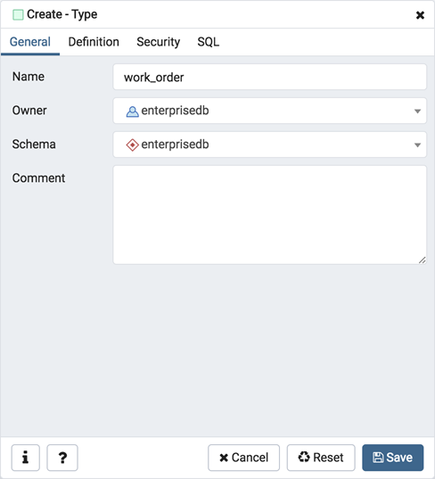
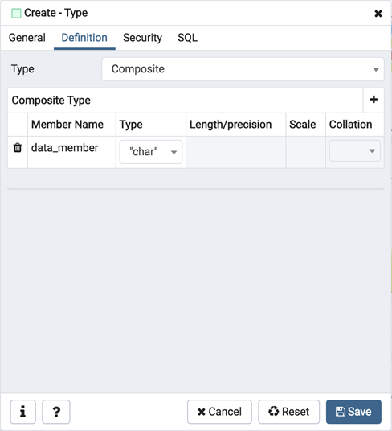
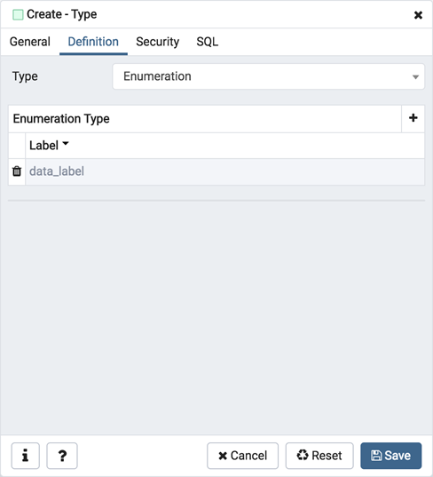
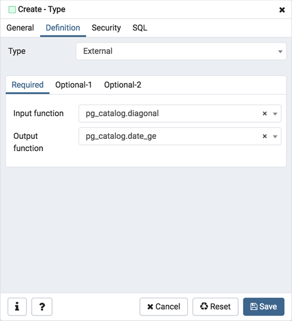
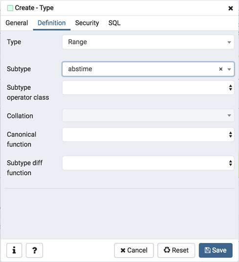
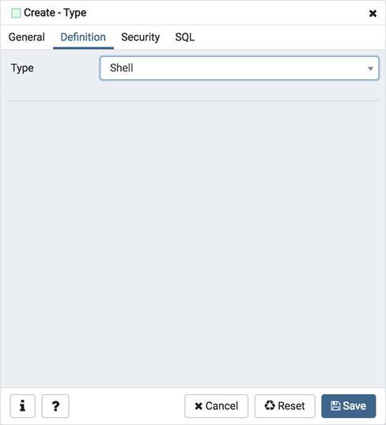
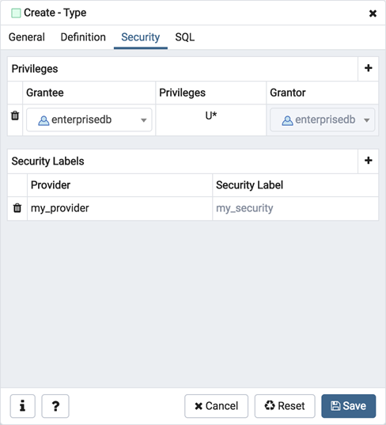
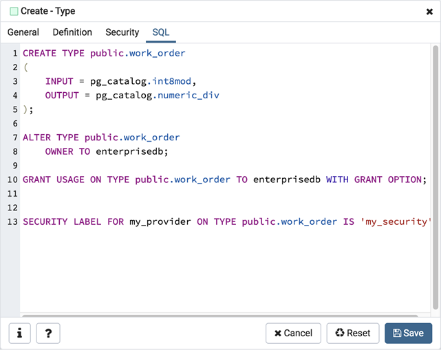

Type Dialog¶
Use the Type dialog to register a custom data type.
The Type dialog organizes the development of a data type through the following dialog tabs: General, Definition, and Security. The SQL tab displays the SQL code generated by dialog selections.
Use the fields in the General tab to identify the custom data type:
Use the Name field to add a descriptive name for the type. The name will be displayed in the pgAdmin tree control. The type name must be distinct from the name of any existing type, domain, or table in the same schema.
Use the drop-down listbox next to Owner to select the role that will own the type.
Select the name of the schema in which the type will reside from the drop-down listbox in the Schema field.
Store notes about the type in the Comments field.
Click the Definition tab to continue.
Select a data type from the drop-down listbox next to Type on the Definition tab; the panel below changes to display the options appropriate for the selected data type. Use the fields in the panel to define the data type.
There are five data types:
Composite Type
Enumeration Type
Range Type
External Type (or Base Type)
Shell Type
If you select Composite in the Type field, the Definition tab displays the Composite Type panel:
Click the Add icon (+) to provide attributes of the type. Fields on the General panel are context sensitive and may be disabled.
Use the Member Name field to add an attribute name.
Use the drop-down listbox in the Type field to select a datatype.
Use the Length/Precision field to specify the maximum length of a non-numeric type, or the total count of significant digits in a numeric type.
Use the Scale field to specify the number of digits to the right of the decimal point.
Use the drop-down listbox in the Collation field to select a collation (if applicable).
Click the Add icon (+) to define an additional member; click the trash icon to the left of the row to discard a row.
If you select the Enumeration in the Type field, the Definition tab displays the Enumeration Type panel:
Click the Add icon (+) to provide a label for the type.
Use the Label field to add a label, which must be less than 64 bytes long.
Click the Add icon (+) after each selection to create additional labels; to discard a label, click the trash icon to the left of the row.
If you select External, the Definition tab displays the External Type panel:
On the Required tab:
Use the drop-down listbox next to the Input function field to add an input_function. The input_function converts the type’s external textual representation to the internal representation used by the operators and functions defined for the type.
Use the drop-down listbox next to the Output function field to add an output_function. The output_function converts the type’s internal representation used by the operators and functions defined for the type to the type’s external textual representation.
On the Optional-1 tab:
Use the drop-down listbox next to the optional Receive Function field to select a receive_function. The optional receive_function converts the type’s external binary representation to the internal representation. If this function is not supplied, the type cannot participate in binary input.
Use the drop-down listbox next to the optional Send function field to select a send_function. The optional send_function converts from the internal representation to the external binary representation. If this function is not supplied, the type cannot participate in binary output.
Use the drop-down listbox next to the optional Typmod in function field tab to select a type_modifier_input_function.
Use the drop-down listbox next to the optional Typmod out function field tab to select a type_modifier_output_function. It is allowed to omit the type_modifier_output_function, in which case the default display format is the stored typmod integer value enclosed in parentheses.
Use the optional Internal length to specify a value for internal representation.
Move the Variable? switch to specify the internal representation is of variable length (VARIABLE). The default is a fixed length positive integer.
Specify a default value in the optional Default field in cases where a column of the data type defaults to something other than the null value. Specify the default with the DEFAULT key word. (A default can be overridden by an explicit DEFAULT clause attached to a particular column.)
Use the drop-down listbox next to the optional Analyze function field to select a function for performing type-specific statistics collection for columns of the data type.
Use the drop-down listbox next to the optional Category type field to help control which implicit cast will be applied in ambiguous situations.
Move the Preferred? switch to Yes to specify the selected category type is preferred. The default is No.
On the Optional-2 tab:
Use the drop-down listbox next to the optional Element type field to specify a data type.
Use the optional Delimiter field to indicate the delimiter to be used between values in the external representation of arrays for this data type. The default delimiter is the comma (,). Note that the delimiter is associated with the array element type, not the array type itself.
Use the drop-down listbox next to Alignment type to specify the storage alignment required for the data type. The allowed values (char, int2, int4, and double) correspond with alignment on 1, 2, 4, or 8 byte boundaries.
Use the drop-down listbox next to optional Storage type to select a strategy for storing data.
Move the Passed by value? switch to Yes to override the existing data type value. The default is No.
Move the Collatable? switch to Yes to specify column definitions and expressions of the type may carry collation information through use of the COLLATE clause. The default is No.
If you select Range in the Type field, the Definition tab displays the Range panel. Fields on the Range panel are context-sensitive and may be disabled.
Use the drop-down listbox next to Sub-type to select an associated b-tree operator class (to determine the ordering of values for the range type).
Use the drop-down listbox next to Sub-type operator class to use a non-default operator class.
Use the drop-down listbox next to Collation to use a non-default collation in the range’s ordering if the sub-type is collatable.
Use the drop-down listbox next to Canonical function to convert range values to a canonical form.
Use the drop-down listbox next to Sub-type diff function to select a user-defined subtype_diff function.
If you select Shell in the Type field, the Definition tab displays the Shell panel:
A shell type is a placeholder for a type and has no parameters.
Click the Security tab to continue.
Use the Security tab to assign privileges and define security labels.
Use the Privileges panel to assign privileges for the type; click the Add icon (+) to grant privileges:
Select the name of the role that will be granted privileges on the type from the drop-down listbox in the Grantee field.
Click inside the Privileges field. Check the boxes to the left of one or more privileges to grant the selected privilege to the specified user.
The current user, who is the default grantor for granting the privilege, is displayed in the Grantor field.
Click the Add icon (+) to assign additional privileges; to discard a privilege, click the trash icon to the left of the row and confirm deletion in the Delete Row popup.
Use the Security Labels panel to define security labels applied to the type. Click the Add icon (+) to add each security label selection:
Specify a security label provider in the Provider field. The named provider must be loaded and must consent to the proposed labeling operation.
Specify a security label in the Security Label field. The meaning of a given label is at the discretion of the label provider. PostgreSQL places no restrictions on whether or how a label provider must interpret security labels; it merely provides a mechanism for storing them.
Click the Add icon (+) to assign additional security labels; to discard a security label, click the trash icon to the left of the row and confirm deletion in the Delete Row popup.
Click the SQL tab to continue.
Your entries in the Type dialog generate a SQL command (see an example below). Use the SQL tab for review; revisit or switch tabs to make any changes to the SQL command.
Example¶
The following is an example of a sql command generated by user selections made in the Type dialog:
The example shown demonstrates creating a data type named work_order. The data type is an enumerated type with three labels: new, open and closed.
Click the Info button (i) to access online help.
Click the Save button to save work.
Click the Cancel button to exit without saving work.
Click the Reset button to restore configuration parameters.